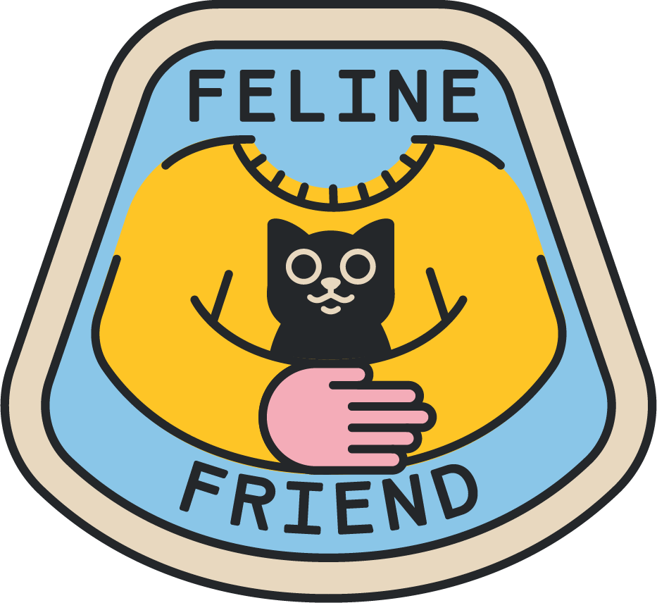

<!DOCTYPE html>
<html lang="en">
<head>
  <meta charset="UTF-8"/>
  <meta name="viewport" content="width=device-width, initial-scale=1.0, viewport-fit=cover"/>
  <title>Felius Rescue Rangers</title>
  <script src="https://cdnjs.cloudflare.com/ajax/libs/react/18.2.0/umd/react.production.min.js"></script>
  <script src="https://cdnjs.cloudflare.com/ajax/libs/react-dom/18.2.0/umd/react-dom.production.min.js"></script>
  <script src="https://cdnjs.cloudflare.com/ajax/libs/babel-standalone/7.23.2/babel.min.js"></script>
  <link href="https://fonts.googleapis.com/css2?family=Nunito:wght@400;700;800&display=swap" rel="stylesheet"/>
  <style>
    *, *::before, *::after { box-sizing: border-box; margin: 0; padding: 0; }
    html, body, #root {
      width: 100%; height: 100%;
      overflow: hidden;
      background: #f7f4f2;
      font-family: 'Nunito', sans-serif;
    }

    /* Outer shell */
    .app {
      display: flex;
      flex-direction: column;
      height: 100%;
      max-width: 680px;
      margin: 0 auto;
    }

    /* Tab bar — wraps onto 2 rows so nothing is ever hidden */
    .tab-bar {
      flex-shrink: 0;
      display: flex;
      flex-wrap: wrap;
      gap: 5px;
      padding: 8px 10px 6px;
      justify-content: center;
    }

    /* Slide area — grows to fill available height */
    .slide-area {
      flex: 1;
      min-height: 0;
      display: flex;
      flex-direction: column;
      padding: 0 12px;
    }

    /* Card — fills slide-area, lays out children vertically */
    .slide-card {
      flex: 1;
      min-height: 0;
      display: flex;
      flex-direction: column;
      background: #fff;
      border-radius: 16px;
      padding: 16px;
      box-shadow: 0 4px 16px rgba(0,0,0,0.07);
      overflow: hidden;
    }

    /* Text block — fixed size, never shrinks */
    .slide-text { flex-shrink: 0; }

    /* Image — fills ALL remaining space in the card */
    .slide-img {
      flex: 1;
      min-height: 0;
      width: 100%;
      object-fit: cover;
      object-position: center 30%;
      border-radius: 10px;
      margin: 10px 0;
      display: block;
    }

    /* Badge image on welcome screen */
    .badge-img {
      flex: 1;
      min-height: 0;
      max-height: 300px;
      object-fit: contain;
      display: block;
      margin: 10px auto;
    }

    /* Callout — fixed, never shrinks */
    .slide-callout { flex-shrink: 0; }

    /* Nav bar */
    .nav-bar {
      flex-shrink: 0;
      display: flex;
      justify-content: space-between;
      align-items: center;
      padding: 10px 12px 12px;
      background: #f7f4f2;
    }

    /* Footer */
    .footer {
      flex-shrink: 0;
      text-align: center;
      padding: 4px 0 8px;
      font-size: 11px;
      color: #9ca3af;
    }

    button { font-family: 'Nunito', sans-serif; cursor: pointer; }
  </style>
</head>
<body>
<div id="root"></div>
<script type="text/babel">
const { useState } = React;

const B = {
  orange:"#ff5c35", pink:"#f5acb8", cream:"#fceae6",
  blue:"#8dc6e8", yellow:"#ffc629", dark:"#24272a", white:"#ffffff",
};
const H = (x={}) => ({ fontFamily:"'Nunito',sans-serif", fontWeight:800, ...x });
const T = (x={}) => ({ fontFamily:"'Nunito',sans-serif", fontWeight:400, ...x });

const IMGS = {
  "welcome":        "img-badge.png",
  "intro-1":        "img-why-do-cats-need-help.jpg",
  "intro-2":        "img-what-is-cat-rescue.jpg",
  "intro-3":        "img-the-good-news.jpg",
  "intro-4":        "img-the-numbers-at-a-glance.jpg",
  "facts-how":      "img-how-many-cats-need-help.jpg",
  "facts-where":    "img-where-do-they-go.jpg",
  "facts-progress": "img-progress-over-time.jpg",
  "facts-why":      "img-what-changed.jpg",
  "journey-1":      "img-stray-or-surrendered.jpg",
  "journey-2":      "img-rescued-and-intake.jpg",
  "journey-3":      "img-vet-care-and-spay-neuter.jpg",
  "journey-4":      "img-foster-home.jpg",
  "journey-5":      "img-adoption-listing.jpg",
  "journey-6":      "img-forever-home.jpg",
};

function Bar({ label, value, max, color }) {
  const pct = Math.round((value / max) * 100);
  return (
    <div style={{ marginBottom:8 }}>
      <div style={{ display:"flex", justifyContent:"space-between", fontSize:12, marginBottom:3, ...T() }}>
        <span>{label}</span>
        <span style={{ color:"#6b7280" }}>{value.toLocaleString()} ({pct}%)</span>
      </div>
      <div style={{ background:"#e5e7eb", borderRadius:999, height:16 }}>
        <div style={{ width:`${pct}%`, background:color, height:"100%", borderRadius:999 }}/>
      </div>
    </div>
  );
}

function SlideVisual({ slideId }) {
  if (slideId === "facts-where") return (
    <div style={{ marginTop:10, flexShrink:0 }}>
      <Bar label="🏠 Adopted" value={2100000} max={3200000} color={B.orange}/>
      <Bar label="🔄 Returned to owners" value={570000} max={3200000} color={B.blue}/>
      <Bar label="😿 Euthanized" value={530000} max={3200000} color={B.pink}/>
    </div>
  );
  if (slideId === "facts-progress") return (
    <div style={{ marginTop:10, flexShrink:0 }}>
      {[{y:"1970s",v:85,c:B.orange},{y:"2000s",v:45,c:B.blue},{y:"Today",v:17,c:B.yellow}].map(d=>(
        <div key={d.y} style={{ marginBottom:8 }}>
          <div style={{ fontSize:12, marginBottom:3, ...H() }}>{d.y} — {d.v}% euthanized</div>
          <div style={{ background:"#e5e7eb", borderRadius:999, height:16 }}>
            <div style={{ width:`${d.v}%`, background:d.c, height:"100%", borderRadius:999, display:"flex", alignItems:"center", paddingLeft:8 }}>
              <span style={{ color:d.c===B.yellow?B.dark:"#fff", fontSize:11, ...H() }}>{d.v}%</span>
            </div>
          </div>
        </div>
      ))}
    </div>
  );
  return null;
}

const TABS = [
  { id:"welcome", label:"Welcome",   emoji:"🏅" },
  { id:"intro",   label:"Intro",     emoji:"🐱" },
  { id:"facts",   label:"Numbers",   emoji:"📊" },
  { id:"journey", label:"Journey",   emoji:"🏠" },
  { id:"roles",   label:"Heroes",    emoji:"🦸" },
  { id:"quiz",    label:"Quiz",      emoji:"🧠" },
  { id:"action",  label:"Be a Hero", emoji:"⭐" },
];

const SLIDES = {
  welcome:[{ id:"welcome", icon:"🏅", color:B.orange, bg:B.cream,
    title:"Welcome, Rescue Ranger!",
    body:"In this module you will discover why millions of cats need help, how rescue works step by step, who the heroes are, what the data tells us, and how YOU can make a difference. Complete all sections and the quiz to earn your Feline Friend badge!",
    callout:"🐾 Ready? Tap Intro above to start your journey!",
  }],
  intro:[
    { id:"intro-1", icon:"😿", color:B.orange, bg:B.cream, title:"Why Do Cats Need Help?",  body:"Every year, millions of cats across the U.S. end up without a home. Some are lost, some are born on the streets, and some are given up by families who can no longer care for them.", callout:"💬 Have you ever seen a stray cat? Where do you think it came from?" },
    { id:"intro-2", icon:"🏠", color:B.orange, bg:B.cream, title:"What Is Cat Rescue?",     body:"Cat rescue is the amazing work done by shelters, volunteers, and everyday people like YOU to give cats a second chance at a happy, loving home.", callout:"🐾 Rescue Rangers are people of all ages who help cats find safety and love!" },
    { id:"intro-3", icon:"📉", color:B.orange, bg:B.cream, title:"The Good News",           body:"Thanks to rescue efforts over the past 50 years, the number of cats euthanized in shelters has dropped by over 75%! Rescue work REALLY makes a difference.", callout:"⭐ The more people who care, the more cats are saved. You can be part of this!" },
    { id:"intro-4", icon:"🔢", color:B.orange, bg:B.cream, title:"The Numbers at a Glance", body:"Every year in the U.S.: 3.2 million cats enter shelters, 2.1 million are adopted, 570,000 are returned to owners, and sadly 530,000 are still euthanized.", callout:"🧮 Roughly 65% of shelter cats find a home — and that number keeps growing!" },
  ],
  facts:[
    { id:"facts-how",      icon:"😿", color:B.blue, bg:"#eaf5fc", title:"How Many Cats Need Help?",   body:"Roughly 3.2 million cats enter U.S. shelters every single year — one cat every 10 seconds!", callout:"⏱️ By the time you finish this card, another cat will have entered a shelter." },
    { id:"facts-where",    icon:"🏠", color:B.blue, bg:"#eaf5fc", title:"Where Do They Go?",          body:"Of the 3.2 million cats in shelters each year, most find a positive outcome — but not all.", callout:null },
    { id:"facts-over",     icon:"🐣", color:B.blue, bg:"#eaf5fc", title:"The Overpopulation Problem", body:"One unspayed female cat and her kittens can produce up to 420,000 cats over 7 years. That is why spay and neuter programs are SO important!", callout:"🧮 Math: 3 litters per year × 4 kittens × 2 years = 24 kittens from one cat!" },
    { id:"facts-progress", icon:"📈", color:B.blue, bg:"#eaf5fc", title:"Progress Over Time",         body:"The euthanasia rate in U.S. shelters has dropped dramatically over the decades, proving that rescue efforts work!", callout:null },
    { id:"facts-why",      icon:"💡", color:B.blue, bg:"#eaf5fc", title:"What Changed?",              body:"More shelters, spay and neuter programs, online adoption listings, foster networks, and people like YOU who care have all made a huge difference.", callout:"💬 Which change do you think had the biggest impact? Why?" },
  ],
  journey:[
    { id:"journey-1", icon:"🏚️", color:"#22c55e", bg:"#f0fdf4", title:"Step 1: Stray or Surrendered",    body:"A cat may be lost, born outside, or given up by an owner. Life outside is tough — cold, hungry, and dangerous.", callout:"🐾 Many kittens are born outside to stray moms and have never known a home." },
    { id:"journey-2", icon:"🚐", color:"#22c55e", bg:"#f0fdf4", title:"Step 2: Rescued and Intake",       body:"Animal control officers or volunteers bring the cat to a shelter. The cat gets a health check, vaccinations, and a warm safe place to sleep.", callout:"🩺 Staff record age, weight, and health so the cat gets the right care." },
    { id:"journey-3", icon:"🏥", color:"#22c55e", bg:"#f0fdf4", title:"Step 3: Vet Care and Spay/Neuter", body:"Every cat gets medical treatment. Spaying or neutering is critical — without it, one cat can lead to hundreds of kittens in just a few years!", callout:"💉 Many rescue groups offer free or low-cost spay/neuter to help reduce overpopulation." },
    { id:"journey-4", icon:"🏡", color:"#22c55e", bg:"#f0fdf4", title:"Step 4: Foster Home",              body:"Many cats go to temporary foster families while waiting for adoption. Foster homes help shy cats feel safe and free up shelter space.", callout:"❤️ Even a few weeks in a loving home can transform a scared cat into an adoptable one!" },
    { id:"journey-5", icon:"📸", color:"#22c55e", bg:"#f0fdf4", title:"Step 5: Adoption Listing",         body:"Cute photos and a bio are posted online. A great profile can get a cat adopted in just days — sometimes hours!", callout:"📱 Shelters use Instagram, Facebook, and TikTok to reach thousands of adopters." },
    { id:"journey-6", icon:"❤️", color:"#22c55e", bg:"#f0fdf4", title:"Step 6: Forever Home!",            body:"A family falls in love and adopts! The cat gets microchipped and goes home with food, toys, and a family who will love them forever.", callout:"🎉 Adoption day is a celebration for the whole shelter!" },
  ],
  roles:[
    { id:"roles-1", icon:"🏠",  color:B.pink, bg:"#fdf2f8", title:"Foster Families",           body:"Foster families open their homes to cats temporarily — especially vital for kittens and sick cats who need extra care shelters cannot always provide.", callout:"🐱 You do not need a huge house — just a spare room and a big heart!" },
    { id:"roles-2", icon:"🩺",  color:B.pink, bg:"#fdf2f8", title:"Shelter Vets and Vet Techs", body:"Shelter vets provide medical care, surgeries, and vaccinations to hundreds of cats. Many work for reduced pay out of passion for animal welfare.", callout:"🎓 Love animals AND science? Becoming a vet could be your superpower!" },
    { id:"roles-3", icon:"📣",  color:B.pink, bg:"#fdf2f8", title:"Volunteers",                 body:"Volunteers socialize cats, clean enclosures, take adoption photos, and drive cats to vet appointments. They are the backbone of every rescue operation.", callout:"⭐ Many shelters accept young volunteers with a parent — ask yours!" },
    { id:"roles-4", icon:"💰",  color:B.pink, bg:"#fdf2f8", title:"Donors",                     body:"Cat rescue costs real money — food, medicine, surgery, and facilities all add up. Generous donors make it possible for rescues to keep their doors open.", callout:"🎪 Bake sales and school fundraisers are great ways kids can help!" },
    { id:"roles-5", icon:"🏛️", color:B.pink, bg:"#fdf2f8", title:"Animal Control Officers",    body:"These first responders rescue stray and injured animals and bring cats to safety. They enforce animal welfare laws in their communities.", callout:"🚨 Animal control officers respond 24/7 — superheroes for animals!" },
    { id:"roles-6", icon:"👨‍💻", color:B.pink, bg:"#fdf2f8", title:"Social Media Advocates",     body:"Sharing adoptable cat posts online can reach thousands of miles and find the perfect family. One viral post can get a cat adopted within hours!", callout:"📲 Ask a grown-up to help you share a shelter cat's adoption post today!" },
  ],
  action:[
    { id:"action-1", icon:"📢", color:B.yellow, bg:"#fffbeb", title:"Spread the Word",       body:"Share adoption posts or tell family and friends about cats at your local shelter. Awareness is the first step to rescue!", callout:"💬 Can you tell 5 people this week about cat rescue?" },
    { id:"action-2", icon:"🧸", color:B.yellow, bg:"#fffbeb", title:"Donate Supplies",       body:"Shelters always need cat food, blankets, litter, and toys. Organize a supply drive at your school and make a real difference!", callout:"📦 Call your local shelter first to ask what they need most." },
    { id:"action-3", icon:"🎨", color:B.yellow, bg:"#fffbeb", title:"Make Adoption Posters", body:"Design creative posters for cats at your local shelter and ask stores, libraries, or community boards to display them.", callout:"🖍️ The more creative the better — bright colors catch people's eyes!" },
    { id:"action-4", icon:"💌", color:B.yellow, bg:"#fffbeb", title:"Write Thank You Cards", body:"Send heartfelt cards to shelter volunteers and staff. Knowing their work is appreciated keeps them motivated to save more cats.", callout:"✏️ A simple thank you for saving cats can make someone's whole day." },
    { id:"action-5", icon:"🏡", color:B.yellow, bg:"#fffbeb", title:"Ask About Fostering",   body:"Talk to your parents! Many families can foster kittens — it is temporary, incredibly rewarding, and teaches kids compassion and responsibility.", callout:"🐾 Fostering a litter of kittens is one of the most magical experiences a family can have!" },
    { id:"action-6", icon:"🐾", color:B.yellow, bg:"#fffbeb", title:"Adopt Dont Shop",       body:"When your family is ready for a pet, choose adoption from a shelter or rescue. Millions of amazing cats are waiting for a loving home!", callout:"❤️ Every adoption saves TWO lives — the cat you take home and the space freed for another." },
  ],
};

const QS = [
  { q:"How many cats enter U.S. shelters every year?", opts:["About 500,000","About 3.2 million","About 100,000","About 10 million"], ans:1, fact:"Roughly 3.2 million cats enter U.S. shelters each year — one cat every 10 seconds!" },
  { q:"What does a no-kill shelter save?", opts:["50% of animals","75% of animals","At least 90% of animals","Only kittens"], ans:2, fact:"A no-kill shelter saves 90% or more of its animals by finding homes, fosters, or transfers." },
  { q:"What is a foster home for a cat?", opts:["A permanent home","A pet store","A temporary home while waiting for adoption","A vet clinic"], ans:2, fact:"Foster families care for cats temporarily — freeing shelter space and helping cats feel safe!" },
  { q:"What does TNR stand for?", opts:["Train Nurture Release","Trap Neuter Return","Tag Name Register","Track Notify Rescue"], ans:1, fact:"TNR helps manage stray populations humanely — trap, spay/neuter, then return to their territory." },
];

function Quiz() {
  const [qi,setQi]=useState(0);
  const [sel,setSel]=useState(null);
  const [score,setScore]=useState(0);
  const [done,setDone]=useState(false);
  const pick=(i)=>{ if(sel!==null)return; setSel(i); if(i===QS[qi].ans)setScore(s=>s+1); };
  const next=()=>{ if(qi+1>=QS.length)setDone(true); else{setQi(q=>q+1);setSel(null);} };
  const reset=()=>{setQi(0);setSel(null);setScore(0);setDone(false);};

  if(done) return (
    <div style={{ display:"flex", flexDirection:"column", alignItems:"center", justifyContent:"center", height:"100%", background:B.white, borderRadius:16, padding:"20px 16px", boxShadow:"0 4px 16px rgba(0,0,0,0.07)", textAlign:"center" }}>
      {score===4
        ? e.target.style.display="none"}/>
        : <div style={{ fontSize:"min(64px,15vw)" }}>{score>=2?"⭐":"💪"}</div>
      }
      <div style={{ fontSize:"clamp(20px,5vw,28px)", color:B.orange, margin:"12px 0 6px", ...H() }}>{score} / {QS.length}</div>
      <div style={{ color:"#4b5563", fontSize:"clamp(13px,3.5vw,16px)", marginBottom:score===4?4:16, ...T() }}>
        {score===4?"Perfect score! You earned your Feline Friend badge!":score>=2?"Great work — keep learning!":"Keep going — every fact helps save a cat!"}
      </div>
      {score===4&&<div style={{ fontSize:"clamp(11px,3vw,14px)", color:B.orange, marginBottom:14, ...H() }}>🏅 You are officially a Feline Friend!</div>}
      <button onClick={reset} style={{ padding:"10px 26px", background:B.orange, color:B.white, border:"none", borderRadius:999, fontSize:"clamp(13px,3.5vw,16px)", ...H() }}>Try Again 🔄</button>
    </div>
  );

  const q=QS[qi];
  return (
    <div style={{ display:"flex", flexDirection:"column", height:"100%", background:B.white, borderRadius:16, padding:"16px", boxShadow:"0 4px 16px rgba(0,0,0,0.07)", overflow:"hidden" }}>
      <div style={{ display:"flex", justifyContent:"space-between", marginBottom:10, flexShrink:0 }}>
        <span style={{ fontSize:"clamp(12px,3vw,15px)", color:"#6b7280", ...T() }}>Question {qi+1} of {QS.length}</span>
        <span style={{ fontSize:"clamp(12px,3vw,15px)", color:B.orange, ...H() }}>Score: {score}</span>
      </div>
      <div style={{ background:B.cream, borderRadius:10, padding:"12px 14px", marginBottom:12, flexShrink:0 }}>
        <div style={{ fontSize:"clamp(14px,3.5vw,17px)", color:B.dark, ...H() }}>{q.q}</div>
      </div>
      <div style={{ display:"flex", flexDirection:"column", gap:8, flex:1, minHeight:0, overflowY:"auto", scrollbarWidth:"none" }}>
        {q.opts.map((opt,i)=>{
          let bg="#f9fafb",border="#e5e7eb",col=B.dark;
          if(sel!==null){ if(i===q.ans){bg="#f0fdf4";border="#22c55e";col="#166534";}else if(i===sel){bg="#fef2f2";border="#ef4444";col="#991b1b";} }
          return <button key={i} onClick={()=>pick(i)} style={{ padding:"10px 14px", borderRadius:10, border:`2px solid ${border}`, background:bg, color:col, fontSize:"clamp(13px,3.5vw,16px)", textAlign:"left", cursor:sel===null?"pointer":"default", flexShrink:0, ...T() }}>{["A","B","C","D"][i]}. {opt}</button>;
        })}
        {sel!==null&&<>
          <div style={{ background:"#fffbeb", borderRadius:10, padding:"11px 13px", borderLeft:`4px solid ${B.yellow}`, fontSize:"clamp(12px,3vw,14px)", flexShrink:0, ...T() }}>
            <span style={{ ...H() }}>💡 Did you know? </span>{q.fact}
          </div>
          <button onClick={next} style={{ padding:"11px", background:B.orange, color:B.white, border:"none", borderRadius:999, fontSize:"clamp(13px,3.5vw,16px)", flexShrink:0, ...H() }}>
            {qi+1<QS.length?"Next Question →":"See My Score!"}
          </button>
        </>}
      </div>
    </div>
  );
}

function App() {
  const [tab,setTab]=useState("welcome");
  const [idxMap,setIdxMap]=useState({welcome:0,intro:0,facts:0,journey:0,roles:0,action:0});
  const switchTab=(t)=>{setTab(t);setIdxMap(prev=>({...prev,[t]:0}));};
  const go=(delta)=>{
    setIdxMap(prev=>{
      const slides=SLIDES[tab];
      const n=Math.min(Math.max(prev[tab]+delta,0),slides.length-1);
      return {...prev,[tab]:n};
    });
  };

  const isQuiz=tab==="quiz";
  const slides=isQuiz?null:SLIDES[tab];
  const idx=isQuiz?0:idxMap[tab];
  const slide=isQuiz?null:slides[idx];
  const total=isQuiz?0:slides.length;
  const ac=isQuiz?B.orange:slide.color;
  const hasImg=!isQuiz&&!!IMGS[slide.id];
  const isWelcome=!isQuiz&&slide.id==="welcome";

  return (
    <div className="app">

      {/* Tab bar */}
      <div className="tab-bar">
        {TABS.map(t=>(
          <button key={t.id} onClick={()=>switchTab(t.id)}
            style={{ padding:"8px 13px", borderRadius:999, border:`2px solid ${tab===t.id?B.orange:"#d1d5db"}`, background:tab===t.id?B.orange:B.white, color:tab===t.id?B.white:B.dark, fontSize:"clamp(11px,2.8vw,13px)", whiteSpace:"nowrap", flexShrink:0, ...(tab===t.id?H():T()) }}>
            {t.emoji} {t.label}
          </button>
        ))}
      </div>

      {/* Slide area */}
      <div className="slide-area">
        {isQuiz ? <Quiz/> : (
          <div className="slide-card" style={{ border:`2px solid ${ac}22` }}>

            {/* Counter pill */}
            <div className="slide-text" style={{ marginBottom:8 }}>
              <span style={{ display:"inline-block", background:ac, color:ac===B.yellow?B.dark:B.white, borderRadius:999, padding:"2px 13px", fontSize:"clamp(10px,2.5vw,12px)", ...H() }}>
                {idx+1} / {total}
              </span>
            </div>

            {/* Title */}
            <div className="slide-text" style={{ fontSize:"clamp(16px,4vw,22px)", color:B.dark, lineHeight:1.25, marginBottom:6, ...H() }}>
              {slide.title}
            </div>

            {/* Image — flex:1 fills leftover space */}
            {isWelcome ? (
              e.target.style.display="none"}/>
            ) : hasImg ? (
              e.target.style.display="none"}/>
            ) : null}

            {/* Body */}
            <div className="slide-text" style={{ fontSize:"clamp(13px,3.2vw,15px)", color:"#374151", lineHeight:1.65, marginBottom:6, ...T() }}>
              {slide.body}
            </div>

            {/* Chart visuals */}
            <SlideVisual slideId={slide.id}/>

            {/* Callout */}
            {slide.callout && (
              <div className="slide-callout" style={{ background:slide.bg, borderRadius:10, padding:"10px 13px", borderLeft:`4px solid ${ac}`, fontSize:"clamp(12px,3vw,14px)", color:B.dark, marginTop:8, ...T() }}>
                {slide.callout}
              </div>
            )}
          </div>
        )}
      </div>

      {/* Nav bar */}
      {!isQuiz && (
        <div className="nav-bar" style={{ flexDirection:"column", gap:8 }}>

          {/* Slide Back / dots / Next */}
          <div style={{ display:"flex", justifyContent:"space-between", alignItems:"center", width:"100%" }}>
            <button onClick={()=>go(-1)} disabled={idx===0}
              style={{ padding:"8px 16px", borderRadius:999, border:"none", background:idx===0?"#e5e7eb":ac, color:idx===0?"#9ca3af":ac===B.yellow?B.dark:B.white, fontSize:"clamp(11px,2.8vw,13px)", ...H() }}>
              ← Back
            </button>
            <div style={{ display:"flex", gap:5, flexWrap:"wrap", justifyContent:"center", maxWidth:160 }}>
              {slides.map((_,i)=>(
                <div key={i} onClick={()=>setIdxMap(prev=>({...prev,[tab]:i}))}
                  style={{ width:i===idx?16:7, height:7, borderRadius:999, background:i===idx?ac:"#d1d5db", cursor:"pointer", transition:"all .3s", flexShrink:0 }}/>
              ))}
            </div>
            <button onClick={()=>go(1)} disabled={idx===total-1}
              style={{ padding:"8px 16px", borderRadius:999, border:"none", background:idx===total-1?"#e5e7eb":ac, color:idx===total-1?"#9ca3af":ac===B.yellow?B.dark:B.white, fontSize:"clamp(11px,2.8vw,13px)", ...H() }}>
              Next →
            </button>
          </div>

          {/* Section Prev / label / Next */}
          {(() => {
            const tabIds = TABS.map(t=>t.id);
            const tabIdx = tabIds.indexOf(tab);
            const prevTab = tabIdx > 0 ? TABS[tabIdx-1] : null;
            const nextTab = tabIdx < TABS.length-1 ? TABS[tabIdx+1] : null;
            return (
              <div style={{ display:"flex", justifyContent:"space-between", alignItems:"center", width:"100%", borderTop:`1px solid #e5e7eb`, paddingTop:7 }}>
                <button
                  onClick={()=>prevTab&&switchTab(prevTab.id)}
                  disabled={!prevTab}
                  style={{ padding:"7px 14px", borderRadius:999, border:`1.5px solid ${prevTab?B.dark:"#e5e7eb"}`, background:"transparent", color:prevTab?B.dark:"#d1d5db", fontSize:"clamp(10px,2.5vw,12px)", whiteSpace:"nowrap", ...H() }}>
                  {prevTab ? `← ${prevTab.emoji} ${prevTab.label}` : ""}
                </button>
                <span style={{ fontSize:"clamp(10px,2.5vw,12px)", color:"#9ca3af", ...T(), textAlign:"center" }}>
                  Section {TABS.findIndex(t=>t.id===tab)+1} of {TABS.length}
                </span>
                <button
                  onClick={()=>nextTab&&switchTab(nextTab.id)}
                  disabled={!nextTab}
                  style={{ padding:"7px 14px", borderRadius:999, border:`1.5px solid ${nextTab?B.dark:"#e5e7eb"}`, background:"transparent", color:nextTab?B.dark:"#d1d5db", fontSize:"clamp(10px,2.5vw,12px)", whiteSpace:"nowrap", ...H() }}>
                  {nextTab ? `${nextTab.emoji} ${nextTab.label} →` : ""}
                </button>
              </div>
            );
          })()}
        </div>
      )}

      {/* Footer */}
      <div className="footer">Data: ASPCA &amp; Shelter Animals Count (2023–24) • Felius Rescue Rangers © 2026</div>
    </div>
  );
}

ReactDOM.createRoot(document.getElementById("root")).render(<App/>);
</script>
</body>
</html>
